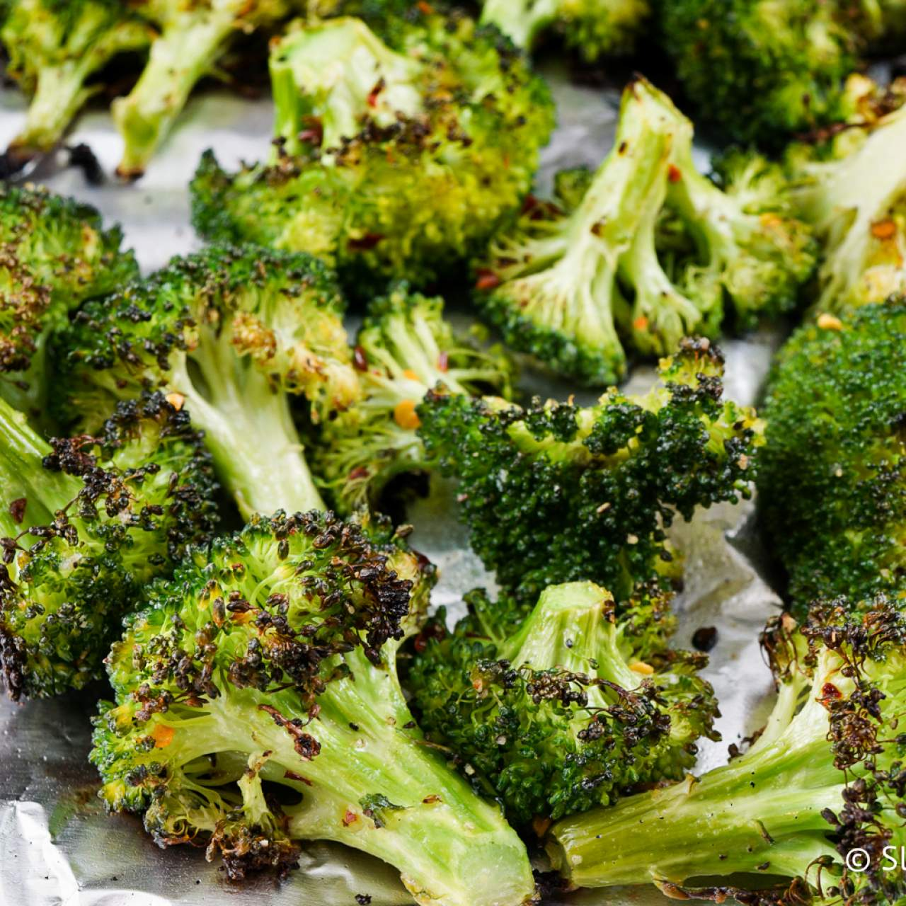

<body>
    <h1>Roasted Broccoli Recipe</h1>

<p>
    <h2>Show me the green!</h2>
    <p>
        Broccoli is remarkably easy to prepare.
    </p>
    <p>...and it's healthy too!</p>

    <ul> Ingredients
    <li>1 kg broccoli</li>
    <li>salt</li>
    <li>pepper</li>
    </ul>

    <ol>Steps
    <li>Cut stalks off of broccoli</li>
    <li>Cut into florets</li>
    <li>Toss with olive oil on sheet pan</li>
    <li>Roast at 400</li>
    </ol>
</p>
</body>